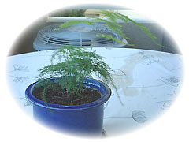

| ..*..*.. 2003年8月10日(日) 晴れ ..*..*..  バルコニーのハーブたち。やっぱり、私としては定期的に更新した方が記録にもなって面白いので、1か月に1度、書いていこうと思います。 右は室内鑑賞用だったアスパラ。外に出してから元気に育っています。でも部屋の中でも楽しみたいので、定期的に家入れようかと思案中。 毎日、水やりだけはかかしませんが、手入れはそんなに頻繁にはしません。ハーブのいいとこでもありますね。昨日、枯れた部分を切ったり、土の様子を見ました。オレガノ、チャイブなんかはハーブ料理でよく使ってます。紫蘇ももう少しかな。紫蘇はたくさん使いたいので、もうひと鉢に種を蒔きました。
タイムはパッと見には元気がないと思っていたのですが、伸びている枝が地を這って、根をつけていました。 ラベンダーは、草の部分は元気ですが、花の咲く気配はなし。 思ったより元気のないのはミント。先月1本だけ元気に育ったのに、それを切ったあとは、他はちょぼちょぼふちの方に出てくるだけです。ミントは地下茎で育つ、と書いてあるので、そのままにしておいたらまた出てくるかな？ 過去の記録-+-** ハーブ観察記録-1--2003.6.1 ハーブ観察記録-2--2003.7.20 |